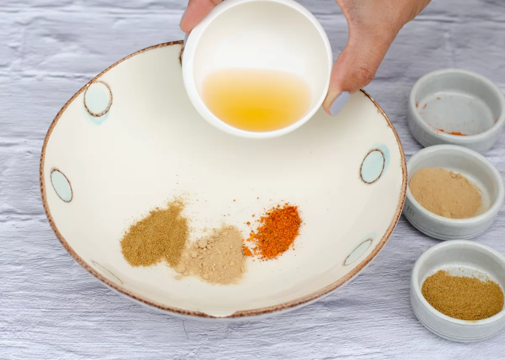

Introducción
El secreto para conseguir un pollo broaster con el sabor y rebozado perfectos está en su marinado, en el rebozado y en una correcta fritura.
Para empezar, es fundamental que el pollo quede bien cubierto con su marinado o adobo de especias y luego, hacer una buena capa de rebozado en la que la maicena es fundamental.
A la hora de freír el pollo, la temperatura del aceite debería de estar alrededor de los 180 °C para obtener un pollo crujiente y dorado por fuera, pero tierno y jugoso por dentro. Si el aceite está demasiado frío, el pollo se cocerá y nos quedará muy aceitoso, y si está demasiado caliente, se tostará mucho y rápido por fuera pero se quedará crudo en el interior. Tampoco debemos de freír muchos trozos de pollo a la vez para que se cocinen bien y por igual, y siempre procurando que los trozos sean uniformes y no demasiado grandes.
Con estos pequeños consejos y la receta que te mostramos a continuación, ya puedes preparar un pollo broaster estupendo para una comida sabrosa, rápida y fácil. Además, lo podrás modificar y adaptar a tus gustos cambiando el aderezo. Así que, ¡no esperes más y vamos a ello!

Información de la receta
Ingredientes del pollo broaster
- 800 g de muslos y alitas de pollo (u otra parte del pollo al gusto)
- Sal
- 2 cucharaditas de comino en polvo
- 2 cucharaditas de ajo en polvo
- 1 cucharadita de ají en polvo o cayena molida
- 30 ml de vinagre de vino
- 150 g de harina de trigo
- 80 g de maicena (o bien fécula o almidón de patata)
- 150 ml de leche
- Aceite abundante para freír
- Salsa de tomate para acompañar (opcional)
Pasos a seguir
- Comenzamos revisando 800 g de alitas y muslos de pollo para retirarles los restos de plumas. Salamos el pollo. Por otra parte, comenzamos la elaboración del marinado mezclando en un bol 1 cucharadita de comino en polvo, 1 cucharadita de ajo en polvo, media cucharadita de ají en polvo o cayena molida y 30 ml de vinagre. El resto de las especias las usaremos para el rebozado. 
- Removemos bien hasta conseguir una mezcla homogénea.
- A continuación, añadimos el pollo y lo mezclamos bien que se empape completamente con este marinado. Lo dejamos reposar mientras preparamos el rebozado.
- Para el rebozado, hacemos primero una pasta para un primer rebozado con la mitad de los ingredientes secos. Para ello, en un bol ponemos 75 g de harina de trigo, 40 g de maicena (en su lugar, podemos usar fécula o almidón de patata) y vamos añadiendo 150 ml de leche poco a poco. Mezclamos hasta conseguir una pasta y reservamos.
- A continuación, preparamos la segunda capa del rebozado mezclando en otro bol 75 g de harina de trigo, 40 g de maicena o fécula de patata y el resto de las especias que habíamos reservado: 1 cucharadita de comino en polvo, 1 cucharadita de ajo en polvo y media cucharada de ají o cayena molida. Mezclamos bien.
- Comenzamos a rebozar el pollo que teníamos reservado con el marinado. Primero pasamos los trozos de pollo por la pasta de harinas y leche de forma que nos quede bien cubierto por todas partes.
- Lo escurrimos bien y en segundo lugar, rebozamos el pollo con la mezcla seca de harinas y especias, asegurándonos de que todas las piezas queden bien recubiertas.
- Vamos rebozando todos los trozos de esta manera y los vamos colocando en un plato.
- Ponemos abundante aceite para freír a calentar. Cuando el aceite caliente, pero sin humear, vamos echando los trozos de pollo rebozados uno a uno y poco a poco, sin que se sobrepongan.
- Freímos el pollo durante unos 7 u 8 minutos, le damos la vuelta y lo freímos un tiempo similar por el otro lado vigilando en todo momento que no se queme. Las alitas necesitarán un poco menos de tiempo que los muslos, por lo que es recomendable ir friendo primero unos y luego los otros.
- Cuando tengamos las piezas de pollo doradas y bien cocinadas, las retiramos para un plato con papel de cocina y mientras continuamos friendo del mismo modo el pollo restante.
- Cuando tengamos todo el pollo frito, lo colocamos en una bandeja o plato y lo servimos bien calentito y acompañado de nuestra salsa preferida. En este caso, nos hemos decantado por una sencilla salsa de tomate.

Resumen fácil de preparación
- Preparamos y salamos el pollo y ponemos en un bol la mitad de las especias, y el vinagre
- Mezclamos y hacemos una pasta
- Añadimos el pollo, mezclamos y reservamos
- Hacemos una pasta para un primer rebozado con la mitad de las harinas y la leche
- Por otro lado, mezclamos el resto de las harinas con el resto de las especias y reservamos
- Pasamos el pollo marinado por la pasta líquida para un primer rebozado
- Lo escurrimos y lo pasamos por la mezcla seca de harinas y especias
- Dejamos las piezas de pollo rebozadas en un plato
- Freímos las piezas de pollo poco a poco
- Giramos el pollo y lo seguimos friendo hasta que esté completamente cocinado y dorado
- Retiramos el pollo ya frito a un plato con papel de cocina
- Servimos el pollo broaster recién hecho